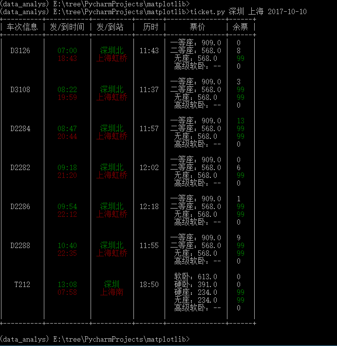

使用python制作查询火车票工具
使用python脚本实现查询火车票信息的效果图如下：

实现的代码如下
# coding: utf-8
"""命令行火车票查看器
Usage:
tickets [-gdtkz]
Options:
-h,--help 显示帮助菜单
-g 高铁
-d 动车
-t 特快
-k 快速
-z 直达
Example:
tickets 北京 上海 2016-10-10
tickets -dg 成都 南京 2016-10-10
"""
import json
import requests
import prettytable
from docopt import docopt
from colorama import init, Fore
class CollectInfo:
def __init__(self):
self.qurey_ret = []
self.header = ['车次信息', '发/到时间', '发/到站', '历时', '票价', '余票']
# 获取车次相关的所有信息
def query_html_ret(self, query_args):
url = 'http://api.12306.com/v1/train/trainInfos?arrStationCode={to_station}&deptDate={date}\
&deptStationCode={source_station}&findGD=false'.format(to_station=query_args['to_station'],
source_station=query_args['source_station'],
date=query_args['date'])
row_ret = requests.get(url)
return row_ret.json()
# 解析获取到的结果
def paser_ret(self, row_ret):
trains_info = row_ret['data']['trainInfos']
for info in trains_info:
row_info = []
# 获取车次信息
row_info.append('\n' + info['trainCode'])
# 获取车次到站时间信息
row_info.append('\n' + '\n'.join([Fore.GREEN + info['deptTime']+ Fore.RESET,
Fore.RED + info['arrTime']+ Fore.RESET]))
# 获取车次站点名称
row_info.append('\n' + '\n'.join([Fore.GREEN + info['deptStationName'] + Fore.RESET,
Fore.RED + info['arrStationName']+ Fore.RESET]))
# 获取车次到达站点所需时间
row_info.append('\n' + info['runTime'])
# 获取票价以及余票信息
seat_price = []
seat_num = []
for seat in info['seatList']:
seat_price.append(seat['seatName'] + '：' + seat['seatPrice'])
if int(seat['seatNum']) > 10:
ticknum = Fore.GREEN + seat['seatNum'] + Fore.RESET
else:
ticknum = seat['seatNum']
seat_num.append(ticknum)
row_info.append('\n'.join(seat_price))
row_info.append('\n'.join(seat_num))
self.qurey_ret.append(row_info)
self.qurey_ret.append([' ', ' ', ' ', ' ', ' ', ' '])
return self.qurey_ret
def show_with_table(self):
ticket_table = prettytable.PrettyTable()
ticket_table.field_names = self.header
for row in self.qurey_ret:
if len(row) == 0:
continue
ticket_table.add_row(row)
return ticket_table
def main():
arguments = docopt(__doc__)
query_args = {}
init()
# 获取所有站点信息(stations.txt信息通过 函数获取)
# https: // kyfw.12306.cn / otn / resources / js / framework / station_name.js?station_version = 1.8971
f = open('stations.txt', 'r')
info = f.read()
stations_info = json.loads(info)
# 从所有站点信息中获取所要查询站点的代码信息
query_args['to_station'] = stations_info[arguments['']]
query_args['source_station'] = stations_info[arguments['']]
query_args['date'] = arguments['']
# 向12306查询，得到跟车次相关的所有信息
collect_train = CollectInfo()
row_ret = collect_train.query_html_ret(query_args)
collect_train.paser_ret(row_ret)
table = collect_train.show_with_table()
print(table)
if __name__ == '__main__':
main()